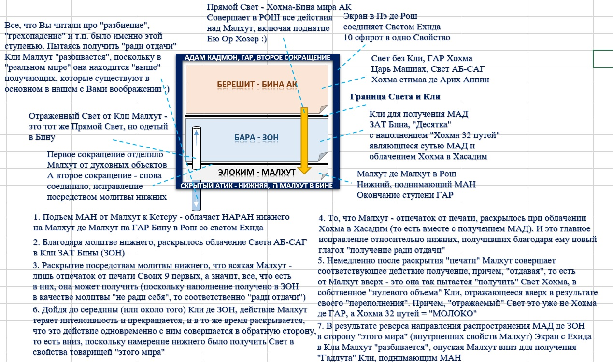

ТОЛЬКО РАЗБИЕНИЕ КЛИ* СВЕТОВЫМ УДАРОМ С ЕГО ПОСЛЕДУЮЩИМ ПОВТОРНЫМ РАЗБИЕНИЕМ ТАКИМ ЖЕ УДАРОМ, НО ОСУЩЕСТВЛЯЕМЫМ ПО ВОЛЕ КЛИ, ЗАВЕРШАЯ ЭТИМ ПЕТЛЮ ВРЕМЕНИ ВОЗВРАТОМ СОБСТВЕННЫХ СОСТАВЛЯЮЩИХ, ТРАЕКТОРИЯ СВОБОДНОГО ДВИЖЕНИЯ КОТОРЫХ БЫЛА ИЗНАЧАЛЬНО ЗАДАНА В МОМЕНТ УДАРА СВЕТА, РАЗРУШИВШЕГО ПЕРВОЕ РАВНОВЕСИЕ И ВЫВЕДШЕЕ ИЗ КЛИ ЧАСТЬ СВЕТА В ВИДЕ КЛИ, ЧТОБЫ ВЕРНУТЬСЯ ПРЕОБРАЗОВАВ ЭНЕРГИЮ, ПОЛУЧЕННУЮ ОТ УДАРА В ЭКРАН, В ЭНЕРГИЮ, СООБЩАЕМУЮ СВОИМ УДАРОМ В ЭТОТ ЖЕ ЭКРАН, ОПИСАВ ДУГУ ПО ВОЗВРАТНОЙ ТРАЕКТОРИИ, И СТАВ ЕГО ЧАСТЬЮ "ПРОТИВ ВСЕХ", "ПО ВОЛЕ КАЖДОГО" И В СООТВЕТСТВИИ С СОБСТВЕННЫМ РАЗВИТИЕМ ОБЩЕГО И ЧАСТНОГО СВЕТОМ, ЕДИНЫМ И НЕДЕЛИМЫМ, КАК ЕДИНОГО И НЕДЕЛИМОГО, (НО В КОТОРОМ НЕТ ВОПРОСА О ТОМ, В КАКИЕ КОСТИ БОГ ИГРАЕТ, А КАКИЕ КОСТИ ЭТОГО ЖДУТ ДО ВТОРОГО ПРИШЕСТВИЯ), ЧИСТАЯ ЭНЕРГИЯ КОТОРОГО ЯВЛЯЕТСЯ СТРОГО ДЕСТРУКТИВНОЙ ДЛЯ ЖИЗНИ, НАХОДЯЩЕЙСЯ В РАВНОВЕСИИ ЭНЕРГИЙ, И СОВЕРШАЮЩЕЕ ПОСТУПАТЕЛЬНОЕ ДВИЖЕНИЯ СВОИХ СОСТАВЛЯЮЩИХ СОГЛАСНО ВОЛНОВОЙ ФУНКЦИИ БЕЗ ИХ УЧЕТА, ПОКА СВЕТ, СВЯТ БЛАГОСЛОВЕН ОН, НЕ РАЗЛУЧИТ НАС ДЛЯ ТОГО, ЧТОБЫ МЫ СНОВА МОГЛИ СТАТЬ ОДНИМ ПОДНЯВШИСЬ В ЭТОМ ДЕЙСТВИИ НА ТОТ УРОВЕНЬ СИЛЫ, УДАР КОТОРОЙ В ЭКРАН ПРЕЖНЕЙ ФОРМЫ ДЛЯ НАС БЫЛ ОБСТОЯТЕЛЬСТВОМ НЕПРЕОДОЛИМОЙ СИЛЫ, ЧТОБЫ СТАТЬ ОБСТОЯТЕЛЬСТВОМ, НЕПРЕОДОЛИМЫМ СИЛАМИ ХАОСА И РАЗОБЩЕНИЯ, НЕ СПОСОБНЫМИ БОЛЕЕ ПОМЕШАТЬ РЕИНТЕГРАЦИИ В КЛИ СВОИХ СОБСТВЕННЫХ ВЗРОСЛЫХ САМОСТОЯТЕЛЬНЫХ ЧАСТЕЙ
ПО ВОЛЕ КЛИ СВЕТОМ, ВЫШЕДШИМ ИЗ КЛИ, ЧТОБЫ ВЕРНУТЬСЯ СВЕТОМ, ВОЗВРАЩАЮЩЕМСЯ В КЛИ, ИЗ КОТОРОГО ВЫШЕЛ, ЧТОБЫ ВЕРНУТЬСЯ ВОПРЕКИ НЕ ИМЕВШЕМУСЯ У НЕГО САМОГО НА МОМЕНТ НАЧАЛА ВЫПОЛНЕНИЯ ДАННОГО МАНЕВРА ПО ДАННОМУ ВОПРОСУ НИКАКОГО ОСОБОГО МНЕНИЯ, КАК И ПО ЛЮБОМУ ДРУГОМУ, И САМОГО ЕГО ПО СУТИ НЕ ИМЕЛОСЬ, НО ОН БЫЛ СОЗДАН СВЕТОМ, ПОЛУЧИВ ВОЛЮ, СДЕЛАВ С НЕЙ ТО, ЧТО ОН САМ ЗАХОТЕЛ, ВЫПОЛНИВ ЭТИМ СОВЕРШЕННУЮ ПРОГРАММУ ГАРМОНИИ ВЫШЕГО ОТНОСИТЕЛЬНО НИЗШЕГО, СОЕДИНЯЮЩЕГОСЯ С ВЫСШИМ ПО МЕРЕ СВОЕГО ФОРМИРОВАНИЯ В ОСОЗНАННОМ ФОРМИРОВАНИИ СВОИМИ НАМЕРЕНЫМИ ДЕЙСТВИЯМИ "ВОПРЕКИ" ВСЕМУ НА СВЕТЕ, ТОГО СОСТОЯНИЯ ЕДИНСТВА, ВЗАИМОДЕЙСТВИЯ, ЛЮБВИ И ВОЛШЕБСТВА, КОТОРОЕ ЗАЛОЖЕНО В СТРАТЕГИЮ ПРОИСХОДЯЩЕГО СИЛОЙ ВЫСШЕГО НАЧАЛА, КОТОРАЯ ДЕЙСТВУЕТ ВОПРЕКИ ВСЕМ, НЕ ИМЕЯ СВОЕЙ ВОЛИ СОВЕРШЕННО, ПОТОМУ ЧТО ВСЕ СЛУЖАТ ЕЙ, СЛУЖА КАЖДЫЙ САМОМУ СЕБЕ, А ОНА СЛУЖИТ ВСЕМ, НЕ СЛУЖА НИКОМУ